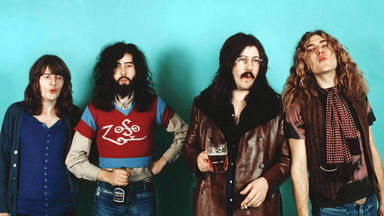

Bandas

Banda de Rock & Roll
Led Zeppelin
Led Zeppelin fue un grupo británico de hard rock fundado en 1968 por el guitarrista Jimmy Page, quien había pertenecido
a The Yardbirds. La banda estuvo integrada por John Paul Jones como bajista y teclista, el vocalista Robert Plant y John
Bonham a la batería (que había coincidido con Plant en The Band of Joy).